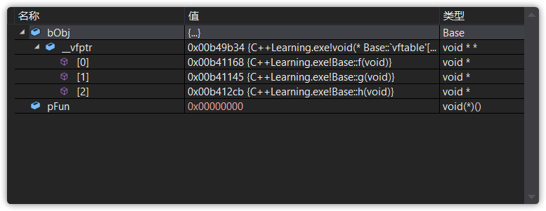
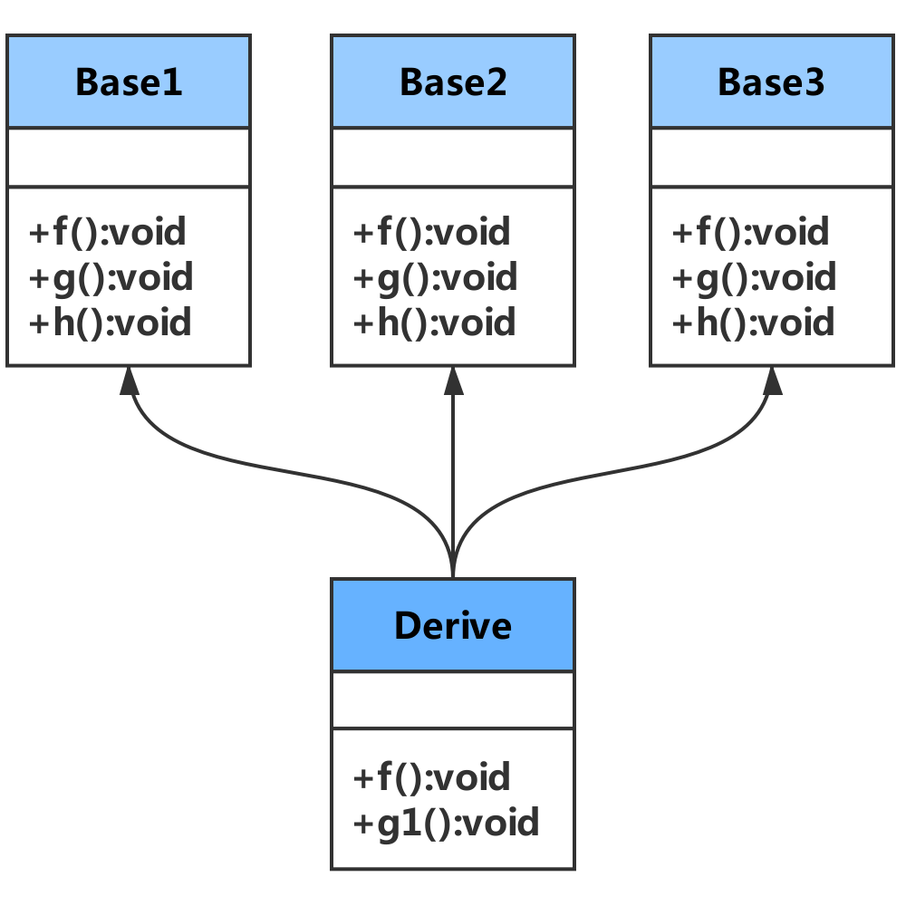

原文连接:https://www.cnblogs.com/zhxmdefj/p/11594459.html
C++中的虚函数实现了多态的机制，也就是用父类型指针指向其子类的实例，然后通过父类的指针调用实际子类的成员函数，这种技术可以让父类的指针有“多种形态”，这也是一种泛型技术，也就是使用不变的代码来实现可变的算法
本文不再阐述虚函数的使用方法，而是从虚函数的实现机制上做一个清晰的剖析
参考博文：https://blog.csdn.net/u012879957/article/details/81027287
想了解实现机制，就必须先了解对象的存储方式
对象数据和函数的存储方式
我们知道，用类去定义对象，系统会为每一个对象分配存储空间
在你的印象中类的存储可能是下图这样的：
上图表示要分别为对象的数据和函数的代码分配存储空间，这样肯定是不行的，内存利用率太低了，所以C++编译系统采用的是以下的方法：
每个对象占用存储空间的只是该对象的数据部分（虚函数指针和虚基类指针也属于数据部分），函数代码属于公用部分
我们常说的“A对象的成员函数”，是从逻辑的角度而言的，而成员函数的物理存储方式其实不是如此
C++内存分区
C++的内存分区大概分成五个部分：
- 栈（stack）：是由编译器在需要时自动分配，不需要时自动清除的变量存储区，通常存放局部变量、函数参数等。
- 堆（heap）：是由
new分配的内存块，由程序员释放（编译器不管），一般一个new与一个delete对应，一个new[]与一个delete[]对应，如果程序员没有释放掉，资源将由操作系统在程序结束后自动回收 - 自由存储区：是由
malloc等分配的内存块，和堆十分相似，用free来释放 - 全局/静态存储区：全局变量和静态变量被分配到同一块内存中
- 常量存储区：这是一块特殊存储区，里边存放常量，不允许修改
（堆和自由存储区其实不过是同一块区域，new底层实现代码中调用了malloc，new可以看成是malloc智能化的高级版本）
你可能会问：静态成员函数和非静态成员函数都是在类的定义时放在内存的代码区的，因而可以说它们都是属于类的，但是类为什么只能直接调用静态类成员函数，而非静态类成员函数(即使函数没有参数)只有类对象才能调用呢
原因是：类的非静态类成员函数其实都内含了一个指向类对象的指针型参数(即this指针)，因此只有类对象才能调用(此时this指针有实值)
虚函数表
C++通过继承和虚函数来实现多态性，虚函数是通过一张虚函数表实现的，虚函数表解决了继承、覆盖、添加虚函数的问题，保证其真实反应实际的函数
不太熟悉的朋友，以下内容可能看的很懵，个人建议上下来回看
虚函数表原理简述
C++实现虚函数的方法是：为每个类对象添加一个隐藏成员，隐藏成员保存了一个指针，这个指针叫虚表指针（vptr），它指向一个虚函数表（virtual function table, vtbl）
虚函数表就像一个数组，表中有许多的槽（slot），每个槽中存放的是一个虚函数的地址（可以理解为数组里存放着指向每个虚函数的指针）
即：每个类使用一个虚函数表，每个类对象用一个虚表指针
在有虚函数的类的实例对象中，这个表被分配在了这个实例对象的内存中（就和上面说的一样），当我们用父类的指针来操作一个子类的时候，这张表就像一个地图一样，指明了实际所应该调用的函数
大概结构如下：

在上面这个图中，虚函数表的最后多加了一个结点，这是虚函数表的结束结点，就像字符串的结束符/0一样，其标志了虚函数表的结束，这个结束标志的值在不同的编译器下可能是不同的
举个例子：
基类对象包含一个虚表指针，指向基类的虚函数表
派生类对象也将包含一个虚表指针，指向派生类虚函数表
- 如果派生类重写了基类的虚方法，该派生类虚函数表将保存重写的虚函数的地址，而不是基类的虚函数地址
- 如果基类中的虚方法没有在派生类中重写，那么派生类将继承基类中的虚方法，而且派生类中虚函数表将保存基类中未被重写的虚函数的地址，但如果派生类中定义了新的虚方法，则该虚函数的地址也将被添加到派生类虚函数表中
你可能已经晕了，没有关系，接下来我们用实例代码演示一下
找到虚函数表
C++的编译器会保证虚函数表的指针存在于对象实例中最前面的位置（为了保证取虚函数表有最高的性能，在有多层继承或是多重继承的情况下），这意味着我们通过对象实例的地址得到这张虚函数表的地址，然后就可以遍历其中函数指针，并调用相应的函数
我们建立一个新类
class Base
{
public:
virtual void f() { cout << "Base::f" << endl; }
virtual void g() { cout << "Base::g" << endl; }
virtual void h() { cout << "Base::h" << endl; }
};按照上面的说法，我们可以通过Base的实例来得到虚函数表，这个表（数组）存了指向f，g，h这三个函数的指针
typedef void(*Fun)(void);
int main()
{
Base bObj;
Fun pFun = NULL;
//指向void* pf(void)类的函数的指针pFun
cout << "虚函数表的地址：" << (int*)(&bObj) << endl;
cout << "虚函数表的第一个函数地址：" << (int*) * (int*)(&bObj) << endl;
//再次取址得到第一个虚函数的地址
//第一个虚函数
pFun = (Fun) * ((int*) * (int*)(&bObj));
pFun();
}我们拆分开来慢慢看这段代码
typedef void(*Fun)(void);typedef void(*Fun)(void)是利用类型别名声明一个函数指针，指向的地址为NULL，等价于typedef decltype(void) *Fun
现在插入几个断点，以观察指针pFun的变化：
Base实例化了对象了bObj，然后Fun pFun=NULL则是声明了一个返回指向函数的指针
这里断点断在Fun pFun=NULL之前，可以看到pFun还未被初始化
初始化pFun=NULL后值变成了0x00000000

实例出对象bObj后，我们用(int*)(&bObj)强行把&bObj转成int*，取得虚函数表的地址，也就是一个指向虚函数表这个数组的首元素的地址的指针，对这个指针再次取址就可以得到第一个虚函数（数组首元素）的地址了，也就是第一个虚函数Base::f()的地址
cout << "虚函数表的地址：" << (int*)(&bObj) << endl;
cout << "虚函数表的第一个函数地址：" << (int*) * (int*)(&bObj) << endl;
//再次取址得到第一个虚函数的地址
//第一个虚函数
pFun = (Fun) * ((int*) * (int*)(&bObj));
pFun();你可能看不太懂这个操作，对(int*) * (int*)(&bObj)可以这样理解，(int*)(&bObj)就是对象bObj被强制转换成了int*了的地址，如果直接调用*(int*)(&bObj)则是指向对象bObj地址所指向的数据，但是此处是个虚函数表，所以指不过去，必须通过(int*)将其转换成函数指针来进行指向，(int*) * (int*)(&bObj)的指向就变成了对象bObj中第一个函数的地址
又因为pFun是由Fun这个函数声明的函数指针，所以相当于是Fun的实体，必须再将这个地址转换成pFun认识的类型，即加上(Fun)*进行强制转换
整个过程简单来说，就是从bObj地址开始读取四个字节的内容（&bObj），然后将这个内容解释成一个内存地址((int*)(&bObj))，再访问这个地址((int*) * (int*)(&bObj))，最后将这个地址中存放的值再解释成一个函数的地址((Fun) * ((int*) * (int*)(&bObj)))
可以看到pFun的值已经等于虚函数表首元素（_vfptr[0]）的值0x00b41168了，也就是说pFun这个指向函数的指针已经指向了函数f()（记住虚函数表存的是指向虚函数的指针，所以值就是这些虚函数的地址）
控制台的输出：
和数组一样，如果要调用Base::g()和Base::h()，我们可以：
pFun = (Fun) * ((int*) * (int*)(&bObj));
// (Fun) * ((int*) * (int*)(&bObj) + 1); // Base::g()
// (Fun) * ((int*) * (int*)(&bObj) + 2); // Base::h()再看一次这张图，是不是更清晰了一点？
现在我们来看看出现继承时的情况
单继承（无覆盖）
class Base {
public:
virtual void f() { cout << "Base::f()" << endl; }
virtual void g() { cout << "Base::g()" << endl; }
virtual void h() { cout << "Base::h()" << endl; }
};
class Derive :public Base {
public:
virtual void f1() { cout << "Derive::f1()" << endl; }
virtual void g1() { cout << "Derive::g1()" << endl; }
virtual void h1() { cout << "Derive::h1()" << endl; }
};typedef void(*Fun)(void);
int main()
{
//Base bObj;
Derive dObj;
Fun pFun = NULL;
cout << "虚函数表的地址:" << (int*)(&dObj) << endl;
cout << "虚函数表的第一个函数地址:" << (int*) * (int*)(&dObj) << endl;
pFun = (Fun) * ((int*) * (int*)(&dObj) + 0);
pFun();
pFun = (Fun) * ((int*) * (int*)(&dObj) + 1);
pFun();
pFun = (Fun) * ((int*) * (int*)(&dObj) + 2);
pFun();
pFun = (Fun) * ((int*) * (int*)(&dObj) + 3);
pFun();
pFun = (Fun) * ((int*) * (int*)(&dObj) + 4);
pFun();
pFun = (Fun) * ((int*) * (int*)(&dObj) + 5);
pFun();
return 0;
}通过vs断点，我们发现到+3时，pFun的值变成了虚函数f1的地址：
运行结果：
这个没有覆盖的继承关系中，子类没有重载任何父类的函数，我们实例化了一个对象dOb，它的虚函数表如下：
也就是说
- 虚函数按照其声明顺序放于表中
- 父类的虚函数在子类的虚函数前
单继承（有覆盖）
现在我们修改下Derive类
class Base {
public:
virtual void f() { cout << "Base::f()" << endl; }
virtual void g() { cout << "Base::g()" << endl; }
virtual void h() { cout << "Base::h()" << endl; }
};
class Derive :public Base {
public:
virtual void f() { cout << "Derive::f()" << endl; }
virtual void g1() { cout << "Derive::g1()" << endl; }
virtual void h1() { cout << "Derive::h1()" << endl; }
};这个继承关系中，Derive的f()重载了Base类中的f()，下面我们用同样的方法调试，main函数基本不变
int main()
{
//Base bObj;
Derive dObj;
Fun pFun = NULL;
cout << "虚函数表的地址:" << (int*)(&dObj) << endl;
cout << "虚函数表的第一个函数地址:" << (int*) * (int*)(&dObj) << endl;
pFun = (Fun) * ((int*) * (int*)(&dObj) + 0);
pFun();
pFun = (Fun) * ((int*) * (int*)(&dObj) + 1);
pFun();
pFun = (Fun) * ((int*) * (int*)(&dObj) + 2);
pFun();
pFun = (Fun) * ((int*) * (int*)(&dObj) + 3);
pFun();
pFun = (Fun) * ((int*) * (int*)(&dObj) + 4);
pFun();
pFun = (Fun) * ((int*) * (int*)(&dObj) + 5);
pFun();
return 0;
}可以看到第一个函数变成了Derive::f()，并且运行到pFun = (Fun) * ((int*) * (int*)(&dObj) + 5)时，pFun的值变成了空
也就是说现在虚函数表的结构是这样的：
也就是说
- 覆盖的f()函数被放到了虚表中原来父类虚函数的位置
- 没有被覆盖的函数依旧
因为这个特性，我们就可以看到对于下面这样的程序：
Base *b = new Derive();
b->f();由b所指的内存中的虚函数表的f()的位置已经被Derive::f()函数地址所取代，于是在实际调用发生时，是Derive::f()被调用了，这就实现了C++的动态多态
多重继承（无覆盖）
class Base1 {
public:
virtual void f() { cout << "Base1::f()" << endl; }
virtual void g() { cout << "Base1::g()" << endl; }
virtual void h() { cout << "Base1::h()" << endl; }
};
class Base2 {
public:
virtual void f() { cout << "Base2::f()" << endl; }
virtual void g() { cout << "Base2::g()" << endl; }
virtual void h() { cout << "Base2::h()" << endl; }
};
class Base3 {
public:
virtual void f() { cout << "Base3::f()" << endl; }
virtual void g() { cout << "Base3::g()" << endl; }
virtual void h() { cout << "Base3::h()" << endl; }
};
class Derive :public Base1, public Base2, public Base3 {
public:
virtual void f1() { cout << "Derive::f1()" << endl; }
virtual void g1() { cout << "Derive::g1()" << endl; }
};typedef void(*Fun)(void);
int main()
{
//Base bObj;
Derive dObj;
Fun pFun = NULL;
cout << "虚函数表的地址:" << (int*)(&dObj) << endl;
cout << "虚函数表的第一个函数地址:" << (int*) * (int*)(&dObj) << endl;
pFun = (Fun) * ((int*) * (int*)(&dObj) + 0);
pFun();
pFun = (Fun) * ((int*) * (int*)(&dObj) + 1);
pFun();
pFun = (Fun) * ((int*) * (int*)(&dObj) + 2);
pFun();
pFun = (Fun) * ((int*) * (int*)(&dObj) + 3);
pFun();
pFun = (Fun) * ((int*) * (int*)(&dObj) + 4);
pFun();
pFun = (Fun) * ((int*) * (int*)(&dObj) + 5);
pFun();
return 0;
}经过断点可以看到，当运行到这里
pFun变成了空指针
控制台结果
为什么+5之后找不到了呢？因为在多继承下，虚函数表存储方式发生了点变化，我们之前说到C++编译器在对象内加入了一个隐藏成员，现在你可以理解为，在多继承时加入了多个隐藏成员，也就是说我们现在有多个虚函数表，具体排列方式如下图：
那我们有没有办法访问呢？强大的C++当然是有的，细心的你应该发现了，这个表（数组）其实只是变成了一个二维数组
int main()
{
Fun pFun = NULL;
Derive dObj;
int** pVtab = (int**)& dObj;
//Base1's vtable
pFun = (Fun)pVtab[0][0];
//等价于：pFun = (Fun) * ((int*) * (int*)((int*)& dObj + 0) + 0);
pFun();
pFun = (Fun)pVtab[0][1];
pFun();
pFun = (Fun)pVtab[0][2];
pFun();
//Derive's vtable
pFun = (Fun)pVtab[0][3];
pFun();
//The tail of the vtable
pFun = (Fun)pVtab[0][4];
cout << pFun << endl;
//Base2's vtable
pFun = (Fun)pVtab[1][0];
pFun();
pFun = (Fun)pVtab[1][1];
pFun();
pFun = (Fun)pVtab[1][2];
pFun();
//The tail of the vtable
pFun = (Fun)pVtab[1][3];
cout << pFun << endl;
//Base3's vtable
pFun = (Fun)pVtab[2][0];
pFun();
pFun = (Fun)pVtab[2][1];
pFun();
pFun = (Fun)pVtab[2][2];
pFun();
pFun = (Fun)pVtab[2][3];
cout << pFun << endl;
return 0;
}也就是说
多重继承（有覆盖）

class Base1 {
public:
virtual void f() { cout << "Base1::f()" << endl; }
virtual void g() { cout << "Base1::g()" << endl; }
virtual void h() { cout << "Base1::h()" << endl; }
};
class Base2 {
public:
virtual void f() { cout << "Base2::f()" << endl; }
virtual void g() { cout << "Base2::g()" << endl; }
virtual void h() { cout << "Base2::h()" << endl; }
};
class Base3 {
public:
virtual void f() { cout << "Base3::f()" << endl; }
virtual void g() { cout << "Base3::g()" << endl; }
virtual void h() { cout << "Base3::h()" << endl; }
};
class Derive :public Base1, public Base2, public Base3 {
public:
virtual void f() { cout << "Derive::f()" << endl; }
virtual void g1() { cout << "Derive::g1()" << endl; }
};main函数不再赘述，最终你会发现现在的虚函数表是这样的：
安全性问题
水能载舟，亦可赛艇亦能覆舟，接下来让我们看看虚函数表可以用来干点什么坏事吧
通过父类型的指针访问子类自己的虚函数
虽然在上面的图中我们可以看到Base1的虚表中有Derive的虚函数，但我们根本不可能使用下面的语句来调用子类的自有虚函数：
Base1 *b1 = new Derive();
b1->f1(); //编译出错任何妄图使用父类指针调用子类中的未覆盖父类的成员函数的行为都会被编译器视为非法，所以，这样的程序根本无法编译通过
但通过多继承部分的代码你应该已经发现了
在运行时，我们可以通过指针的方式访问虚函数表来达到违反C++语义的行为（也就是我们在多重继承中使用的代码）
Fun pFun = NULL;
Derive dObj;
int** pVtab = (int**)& dObj;
//Base1's vtable
pFun = (Fun)pVtab[0][0];
//等价于：pFun = (Fun) * ((int*) * (int*)((int*)& dObj + 0) + 0);
//Derive's vtable
pFun = (Fun)pVtab[0][3];
pFun();
//The tail of the vtable
pFun = (Fun)pVtab[0][4];
cout << pFun << endl;访问非public的虚函数
父类非public的虚函数同样会存在于虚函数表中，所以，我们同样可以使用访问虚函数表的方式来访问这些non-public的虚函数，这是很容易做到的
class Base {
private:
virtual void f() { cout << "Base::f" << endl; }
};
class Derive : public Base {
};
typedef void(*Fun)(void);
void main() {
Derive d;
Fun pFun = (Fun) * ((int*) * (int*)(&d) + 0);
pFun(); //挖藕？
}最后注意
虚函数表不一定是存在最开头，但是目前各个编译器大多是这样设置的